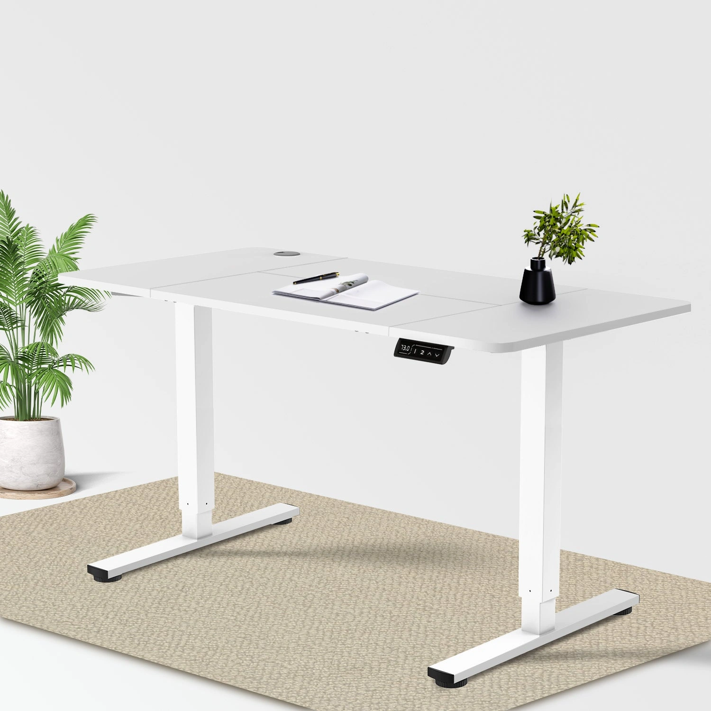

P5 · Economy 白色 120×60 cm

P5官方变体
SKU：G-HAD241222B。变体ID：44533451587850。尺寸：120×60 cm。采集时available=true。
核验事实：白色120×60在售变体；电动升降；两组记忆高度；规格和描述明确四片桌板拼接。
冲突与不使用的宣称：不得生成一体板或宣传无拼接；页面高度72–116与“行程56 cm”存在算术冲突，不引用行程。
视觉锁定：使用该型号官方原图。保留桌板材质、拼接方式、立柱节数与装配方向、桌脚、单个控制器和线缆。控制器在使用者右手侧的前长边下方。Dual Ultra X按已确认产品约束保持右边距约桌长0.125，官方参考如有冲突先复核。不得混用其他型号控制器。
官方图有跨尺寸复用的情况，实际尺寸以变体数据为准，不从共用示意图测量台面。配件是否包含应以当次详情复核。